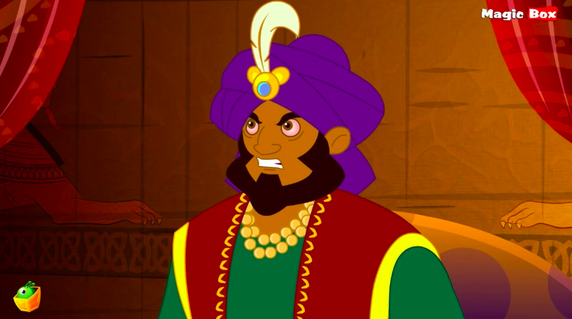

Shahryar as a Child
Influence on Children's Literature and Media
The Arabian Nights are oftentimes adapted for children, which poses problems for much of te content in the text, especially Shahryar's character, as a murderer and rapist. The character shift of the King is startling, leaving the reader wondering if you can even call the King from the text and the King from these adaptations the same character.
Burton's Translation
"Thou wottest that I have sworn by the Raiser of the Heavens that after I have gone in to her this night I shall say to thee on the morrow's morning:--Take her and slay her! and, if thou slay her not, I will slay thee in her stead without fail" (Shahryar).
From Anna Milbourne's children's story "The Arabian Nights"
"Once upon a time there lived a hugely rich and powerful Sultan. He ruled his country with kindness because he was in love. He and his wife were the happiest couple alive."
"His kingdom quaked under his fearful reign. Parents hid their daughters away so they wouldn't be forced to marry the Sultan. Girls fled the country. Newborn baby girls were met with sorrow instead of joy, since nobody knew when the Sultan's terrible decree would end."
Although lightened a bit from the original texts, this content is not too kid-friendly. It is more that the nature of the stories are based in morals, and offer a chance for children to learn through Scheherazade's stories. Dunyazad as the younger sibling plays the role of the children audience, but Shahryar is the one really learning - which reveals his role as a child.

Sharyar's Childish Role
In this Canadian TV show, 1001 Nights, Scheherazade and Shahryar are happily married, with Shahryar playing the clueless, manytimes immature husband. Dunyazad and Shah Zamman are 11 year old children who get up to all sorts of trouble, misbehaving and causing a ruckus. The premise of the show is that each episode the two kids get up to no good, and Scheherazade tells them a story that carries a moral from which they learn. What is interesting is how manytimes Sharyar is also being taught a lesson.
Shahryar is seen as a childish figure - it is not much of a stetch from the original text to get him into a position of an immature adult. He is entertained by stories night after night, many of them actually repeating the same themes and stories over and over again. In 1001 Nights, the show plays off the theme of Shahryar being needing to be taught a lesson, just in this case the stakes are much lower!